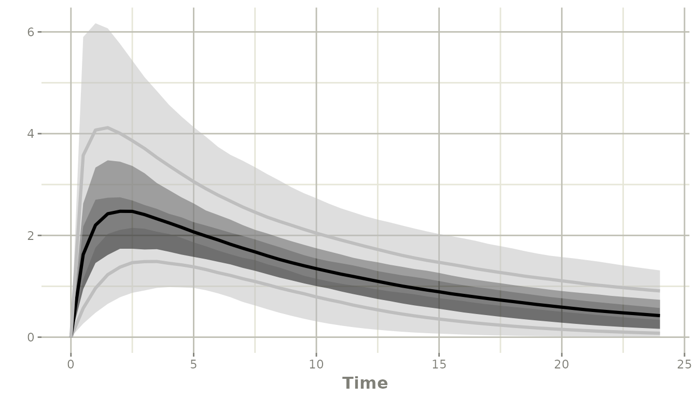
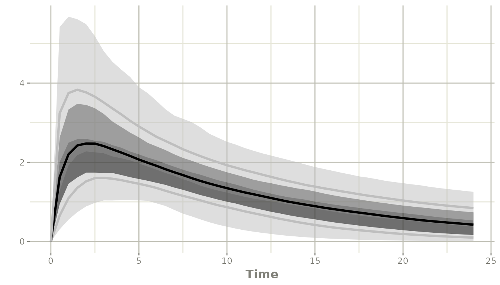
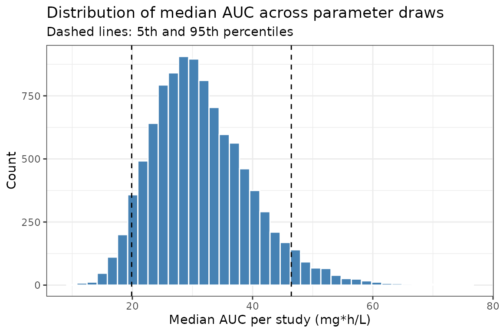
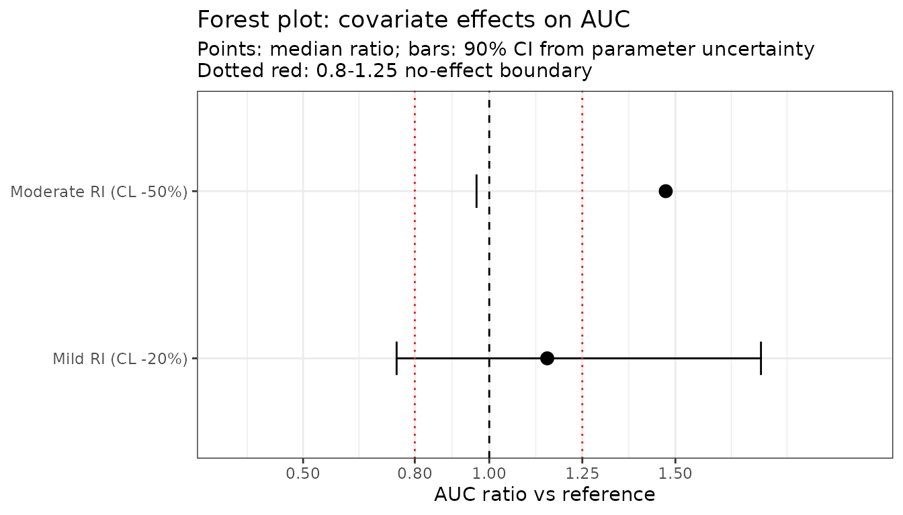

Simulation with Parameter Uncertainty in rxode2
Source:vignettes/articles/rxode2-parameter-uncertainty.Rmd
rxode2-parameter-uncertainty.Rmd
library(rxode2)
#> rxode2 5.0.2 using 2 threads (see ?getRxThreads)
#> no cache: create with `rxCreateCache()`
library(ggplot2)Why simulate with parameter uncertainty?
Population PK/PD parameter estimates carry uncertainty expressed by their variance-covariance matrix (from the covariance step of the estimator) or by bootstrap replicates. Propagating this uncertainty into simulations produces confidence intervals on predicted concentrations, exposure metrics, or target attainment probabilities that reflect both between-subject variability (BSV) and uncertainty in the model parameters.
Model and parameter setup
pkModel <- function() {
ini({
tka <- log(1.57); label("log Ka")
tcl <- log(2.72); label("log CL")
tv <- log(31.07); label("log V")
eta.ka ~ 0.6
eta.cl ~ 0.09
eta.v ~ 0.1
add.sd <- 0.7
})
model({
ka <- exp(tka + eta.ka)
cl <- exp(tcl + eta.cl)
v <- exp(tv + eta.v)
d/dt(depot) <- -ka * depot
d/dt(center) <- ka * depot - cl / v * center
cp <- center / v
cp ~ add(add.sd)
})
}
## Variance-covariance matrix for the fixed effects (thetas)
## In practice this comes from your estimation software output
thetaVcov <- lotri::lotri({
tka ~ 0.04
tcl ~ c(0.01, 0.02)
tv ~ 0.03
})
## Extend the model with an AUC compartment via model piping.
## d/dt(auc) <- cp accumulates concentration over time, so auc at
## the last observation time equals AUC_0-t directly.
pkModelAuc <- pkModel |>
model(d/dt(auc) <- cp, append = TRUE)
#> ℹ parameter labels from comments are typically ignored in non-interactive mode
#> ℹ Need to run with the source intact to parse commentsBuilt-in simulation with parameter uncertainty
Pass thetaMat (the theta variance-covariance matrix) and
nStud (number of virtual studies, i.e. parameter draws)
directly to rxSolve(). Internally rxode2 samples
nStud parameter vectors from a multivariate normal
distribution and simulates nSub subjects for each draw.
rxSetSeed(42)
et <- et(amt = 100, time = 0) |>
et(seq(0, 24, by = 0.5))
sim <- rxSolve(
pkModelAuc,
et,
thetaMat = thetaVcov, # uncertainty matrix for thetas
nStud = 500, # virtual studies (parameter draws)
nSub = 20 # subjects per study
)
#> [====|====|====|====|====|====|====|====|====|====] 0:00:00Confidence interval on the concentration-time profile
Call confint() on the solved object to summarize across
both parameter draws and subjects. When nStud > 1 rxode2
uses the study dimension to construct confidence bands around the
percentile curves.
ci <- confint(sim, "cp", level = 0.95)
#> ! in order to put confidence bands around the intervals, you need at least 2500 simulations
#> summarizing data...done
plot(ci)
The shaded ribbon spans the 2.5th to 97.5th percentile of the
population prediction (combining BSV and parameter uncertainty); the
solid line is the median. The ci argument to
confint() controls the width of the confidence bands placed
around those percentiles:
## 90% interval with 95% confidence bands around it
ci90 <- confint(sim, "cp", level = 0.90, ci = 0.95)
#> ! in order to put confidence bands around the intervals, you need at least 2500 simulations
#> summarizing data...done
plot(ci90)
Uncertainty in a summary exposure metric (AUC)
Extract the per-study, per-subject AUC from the simulation and summarize across subjects within each study to obtain the distribution of study-level median AUC.
library(data.table)
dt <- as.data.table(sim)
## auc at time == 24 is AUC_0-24 directly (no trapezoid rule needed)
aucByStudy <- dt[time == 24, .(medAUC = median(auc)), by = sim.id]
## Point estimate and 90% CI across draws
quantile(aucByStudy$medAUC, c(0.05, 0.50, 0.95))
#> 5% 50% 95%
#> 19.71546 30.48414 46.30634
ggplot(aucByStudy, aes(x = medAUC)) +
geom_histogram(bins = 40, fill = "steelblue", colour = "white") +
geom_vline(xintercept = quantile(aucByStudy$medAUC, c(0.05, 0.95)),
linetype = "dashed") +
labs(x = "Median AUC per study (mg*h/L)",
y = "Count",
title = "Distribution of median AUC across parameter draws",
subtitle = "Dashed lines: 5th and 95th percentiles") +
theme_bw()
Forest plot for covariate effects with uncertainty
Simulate each covariate scenario with the same parameter uncertainty, then compare the AUC ratio relative to a reference.
## Helper: simulate one scenario and return median AUC per study
simScenAuc <- function(params, label) {
s <- rxSolve(
pkModelAuc, et,
params = params,
thetaMat = thetaVcov,
nStud = 500,
nSub = 10
)
dt <- as.data.table(s)
## auc at the last time point is AUC_0-24 directly
med <- dt[time == 24, .(medAUC = median(auc)), by = sim.id]
med[, scenario := label]
med
}
set.seed(42)
scenarios <- list(
reference = c(tka = log(1.57), tcl = log(2.72), tv = log(31.07)),
mild_ri = c(tka = log(1.57), tcl = log(2.72 * 0.80), tv = log(31.07)),
moderate_ri = c(tka = log(1.57), tcl = log(2.72 * 0.50), tv = log(31.07))
)
aucAll <- rbindlist(Map(simScenAuc, scenarios, names(scenarios)))
## AUC ratio relative to reference, median + 90% CI
refAuc <- aucAll[scenario == "reference", medAUC]
forest <- aucAll[scenario != "reference",
.(
ratio = median(medAUC) / median(refAuc),
lo = quantile(medAUC / median(refAuc), 0.05),
hi = quantile(medAUC / median(refAuc), 0.95)
),
by = scenario
]
forest[, scenario := factor(scenario,
levels = c("mild_ri", "moderate_ri"),
labels = c("Mild RI (CL -20%)", "Moderate RI (CL -50%)"))]
ggplot(forest, aes(x = ratio, y = scenario)) +
geom_point(size = 3) +
geom_errorbar(aes(xmin = lo, xmax = hi), orientation = "y", width = 0.2) +
geom_vline(xintercept = 1, linetype = "dashed") +
geom_vline(xintercept = c(0.8, 1.25), linetype = "dotted", colour = "red") +
scale_x_continuous(limits = c(0.3, 2.0),
breaks = c(0.5, 0.8, 1.0, 1.25, 1.5)) +
labs(x = "AUC ratio vs reference",
y = NULL,
title = "Forest plot: covariate effects on AUC",
subtitle = "Points: median ratio; bars: 90% CI from parameter uncertainty\nDotted red: 0.8-1.25 no-effect boundary") +
theme_bw()